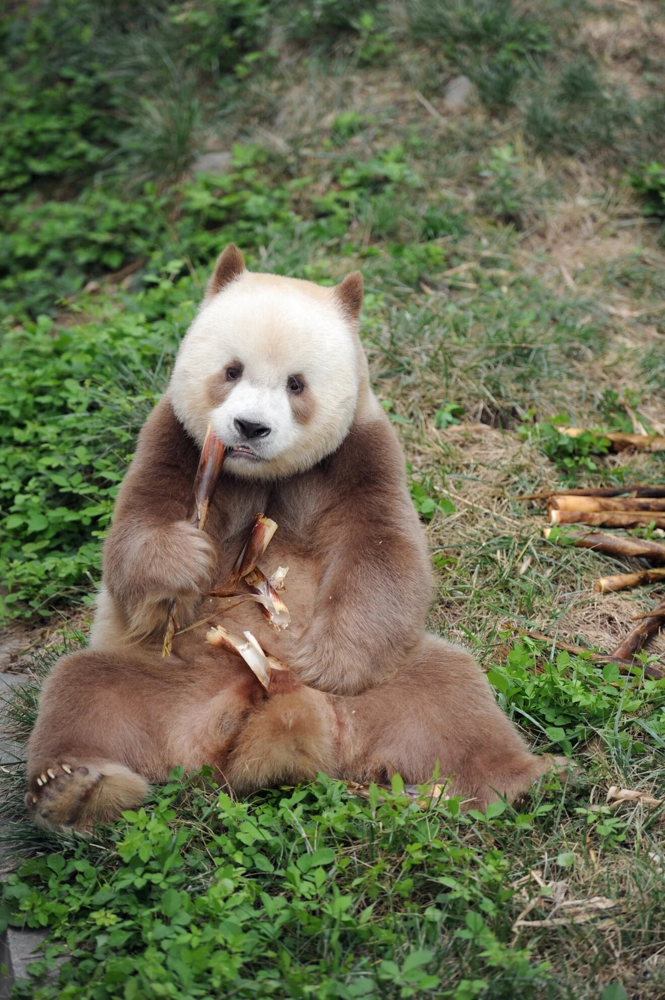
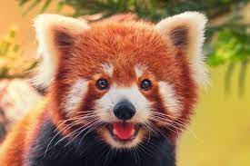

The Qinling panda is a subspecies of the giant panda, discovered in the 1960s but not recognized as a subspecies until 2005.
Disregarding the nominate subspecies, it is the first giant panda subspecies to be recognized.
It differs from the more familiar nominate subspecies by its smaller skull and dark brown and light brown (rather than black and white) fur, and its smaller overall size.
Its eye spots are under the lower lid, instead of around the eyes. Brown pandas are very rare.
Population, Conservation & Threats
There are an estimated 1,800 Qinling pandas living in the wild.
On August 30, 1989, a female of this species was captured and brought to the Xi'an Zoo to be mated with a regular giant panda.
This panda's offspring was black-and-white, but reportedly started becoming brownish as it aged.
According to other reports she gave birth to three cubs, all of whom died shortly after being born.
The mother, named Dan-Dan, died in 2000.
some health issues
Due to the Qinling subspecies being restricted in range, it has been exposed to toxicants in their bamboo diet.
Even though it is not fully known which toxicants it has been exposed to, it was determined to be heavy metals from atmospheric deposition.
Thus, the conservation of the Qinling pandas may be compromised in the future due to air pollution in China.
Dental health is important for the survival of the Qinling Pandas. These pandas have a survival rate of 5-20 years.
The most common dental abnormalities that Qinling Pandas face are dental attrition and fractures.
These two abnormalities can impact the survival rate of these pandas.
Red Panda
The red panda (Ailurus fulgens) is a carnivoran native to the eastern Himalayas and southwestern China.
It is listed as Endangered on the IUCN Red List because the wild population is estimated at fewer than 10,000 mature individuals and continues to decline due to
habitat loss and fragmentation, poaching, and inbreeding depression.Despite its name, it is not closely related to the giant panda.
The red panda has reddish-brown fur, a long, shaggy tail, and a waddling gait due to its shorter front legs,
it is roughly the size of a domestic cat, though with a longer body. It is arboreal and feeds mainly on bamboo, but also eats eggs, birds, and insects.
It is a solitary animal, mainly active from dusk to dawn, and is largely sedentary during the day. It is also called the lesser panda, the red bear-cat, and the red cat-bear.
Traditionally it was thought to consist of two subspecies.
However, results of genetic analysis indicate that there are probably two distinct red panda species, the Chinese red panda and the Himalayan red panda, which genetically diverged 0.22 million years ago.
Population, Conservation & Threats
The red panda is listed as endangered on the IUCN Red List since 2008 because the global population is estimated at about 10,000 individuals,
with a decreasing population trend; only about half of the total area of potential habitat of 142,000 km2 (55,000 sq mi) is actually being used by the species.
Due to its shy and secretive nature, and its largely nocturnal habits, observation of red pandas is difficult. Therefore, population figures in the wild are determined by population density estimates
and not direct counts. It is protected in all range countries, and hunting is illegal. It is listed in CITES Appendix I.
Worldwide population estimates range from fewer than 2,500 to between 16,000 and 20,000 individuals.
In 1999, the tota population in China was estimated at between 3,000 and 7,000 individuals.
In 2001, the wild population in India was estimated at between 5,000 and 6,000 individuals.
Estimates for Nepal indicate only a few hundred individuals.Reliable population numbers are hard to find, partly because other animals have been mistaken for
the red panda.

Threats
The primary threats to red pandas are direct harvest from the wild, live or dead, competition with domestic livestock resulting in habitat degradation, and deforestation resulting in habitat loss or fragmentation.
The relative importance of these factors is different in each region, and is not well understood.
For instance, in India, the biggest threat seems to be habitat loss followed by poaching, while in China,
the biggest threat seems to be hunting and poaching. A 40% decrease in red panda populations has been reported in China over the last 50 years,
and populations in western Himalayan areas are considered to be lower.
 The red panda (Ailurus fulgens) is a carnivoran native to the eastern Himalayas and southwestern China.
It is listed as Endangered on the IUCN Red List because the wild population is estimated at fewer than 10,000 mature individuals and continues to decline due to
habitat loss and fragmentation, poaching, and inbreeding depression.Despite its name, it is not closely related to the giant panda.
The red panda (Ailurus fulgens) is a carnivoran native to the eastern Himalayas and southwestern China.
It is listed as Endangered on the IUCN Red List because the wild population is estimated at fewer than 10,000 mature individuals and continues to decline due to
habitat loss and fragmentation, poaching, and inbreeding depression.Despite its name, it is not closely related to the giant panda.